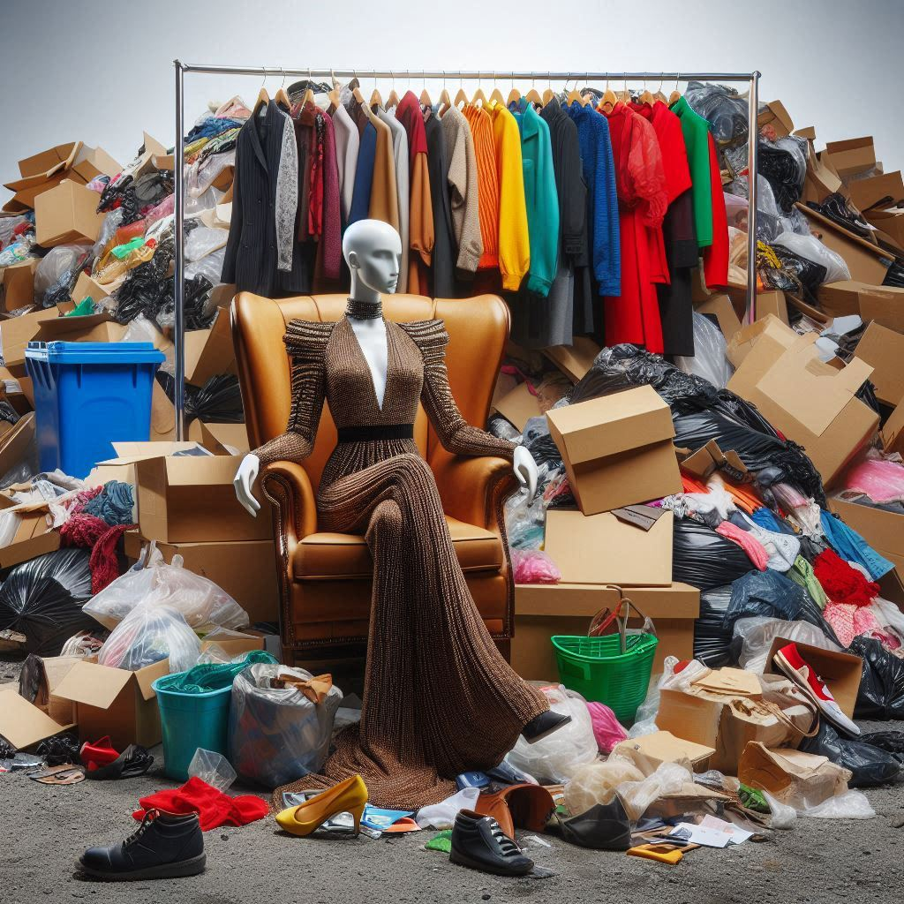

O Preço da Moda
O preço da moda vai além do valor monetário das peças e reflete os custos ambientais e sociais envolvidos em sua produção. Como podemos mudar isso?
A indústria da moda rápida contribui significativamente para a poluição, o desperdício de recursos e condições de trabalho precárias. Promover práticas éticas e sustentáveis é fundamental para reduzir esse impacto.